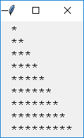
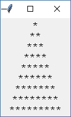

| 1. Star Triangle
Use for-loop to create a star triangle as below. You must be familiar with this exercise in many programming languages when you learn the loop structure.

You may also show a triangle as follows, but please be noted that in a text-based environment, there is no way you can "centerize" a triangle like this.

|